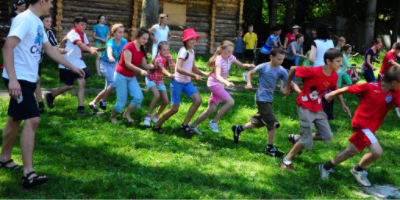
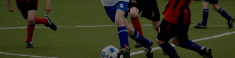
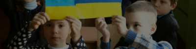

07.02.2017
Організація поїздки сиріт до дитячого табору у Болгарії
Перебуваючи у сиротинцях ці діти мають різного роду матеріальні та нематеріальні
потреби, якими зазвичай ніхто не займається. Ті, хто має займатися утриманням
дитячих будинків, опікою над дітьми часто забувають про свій обов’язок або ж
отримують недостатнє фінансування від держави. Тому вся надія цих діточок
покладається на небайдужих людей, волонтерів, благодійні фонди.
Допомогли: Ім’я Фамілія, ВАТ “Фірма 1”, Ім’я Фамілія 4, ВАТ “Фірма 3”

04.01.2017
Секція з футболу для дітей початкових класів

03.01.2017
Адаптація дітей із зони АТО
23.11.2016
Необхідно купити ліки у дитячий будинок